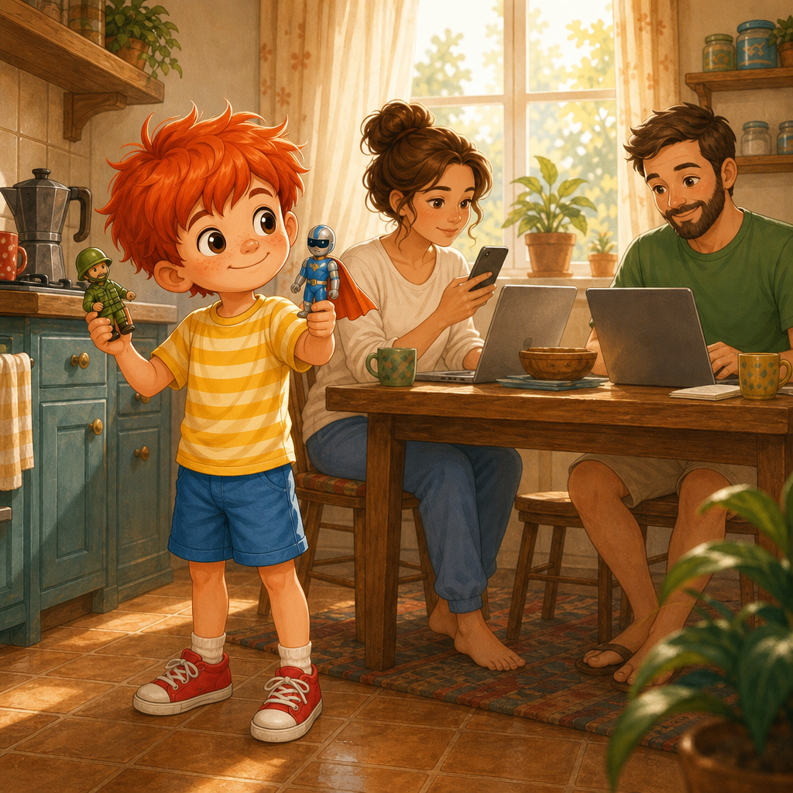
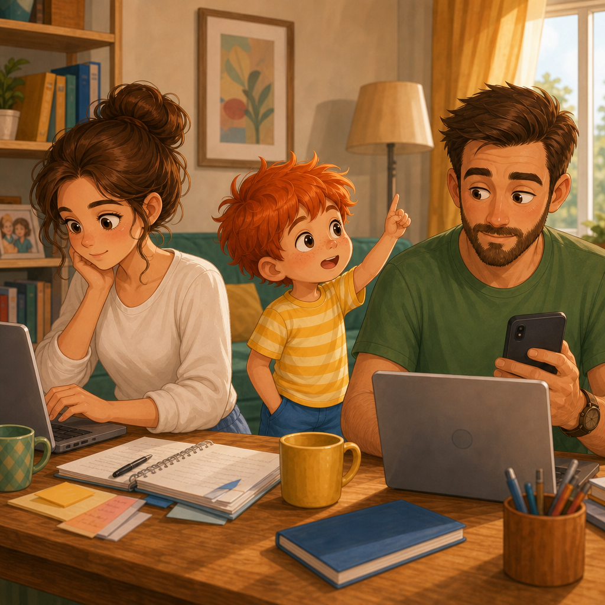
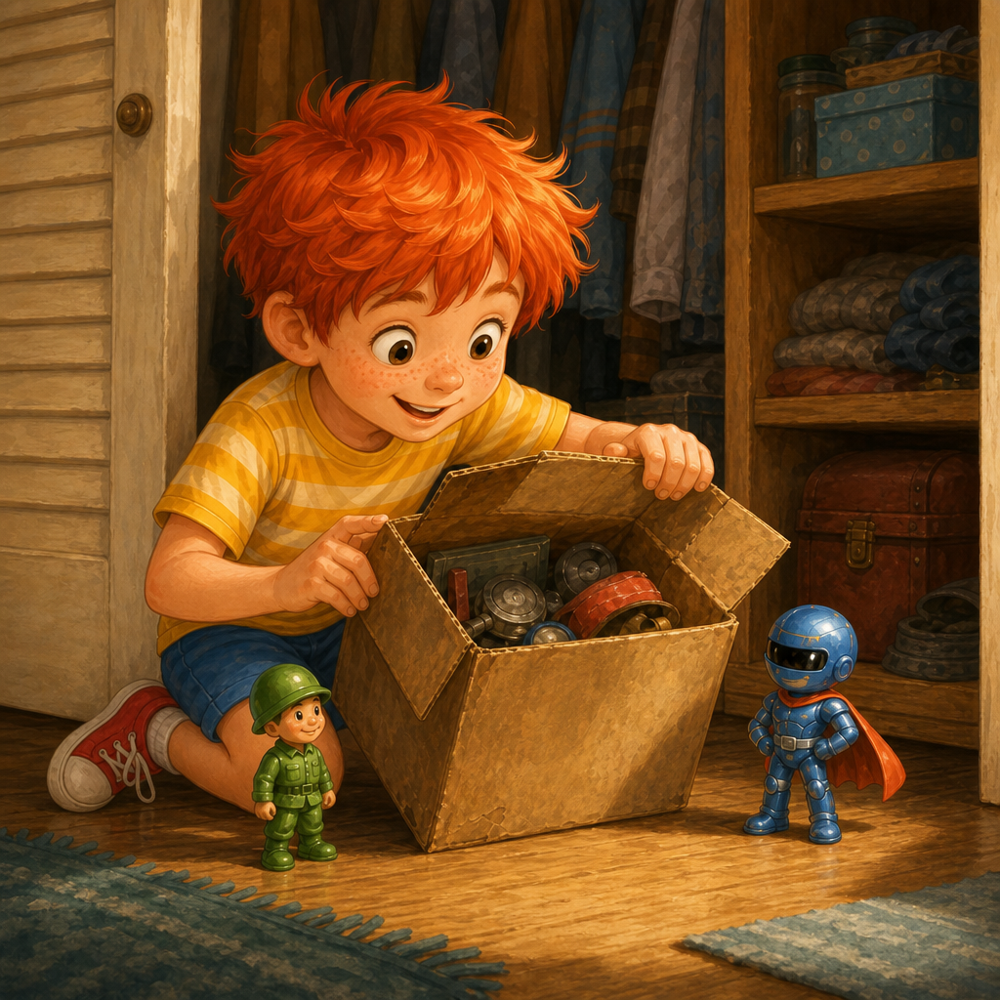
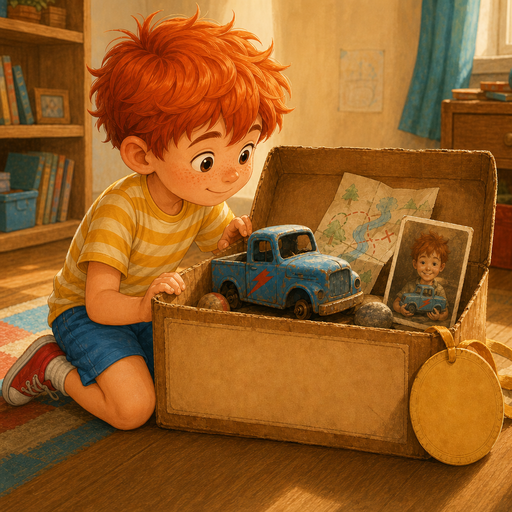
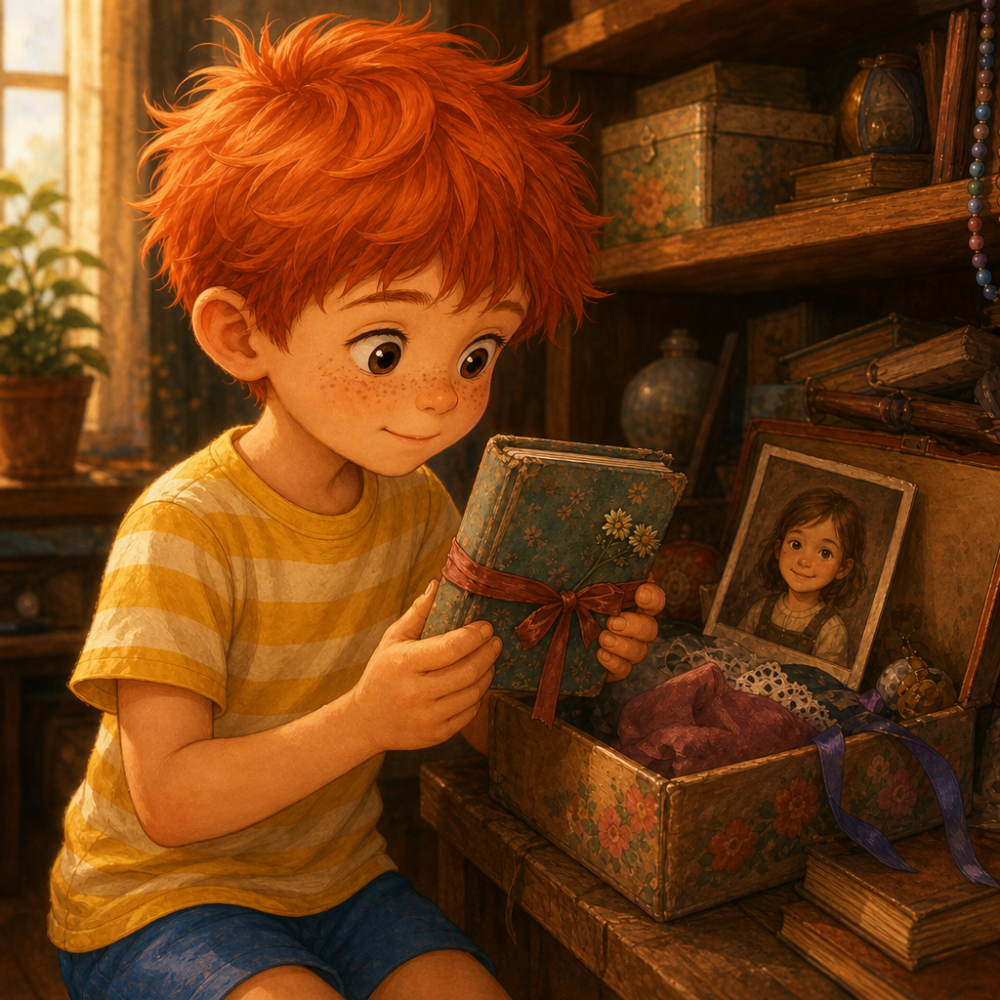
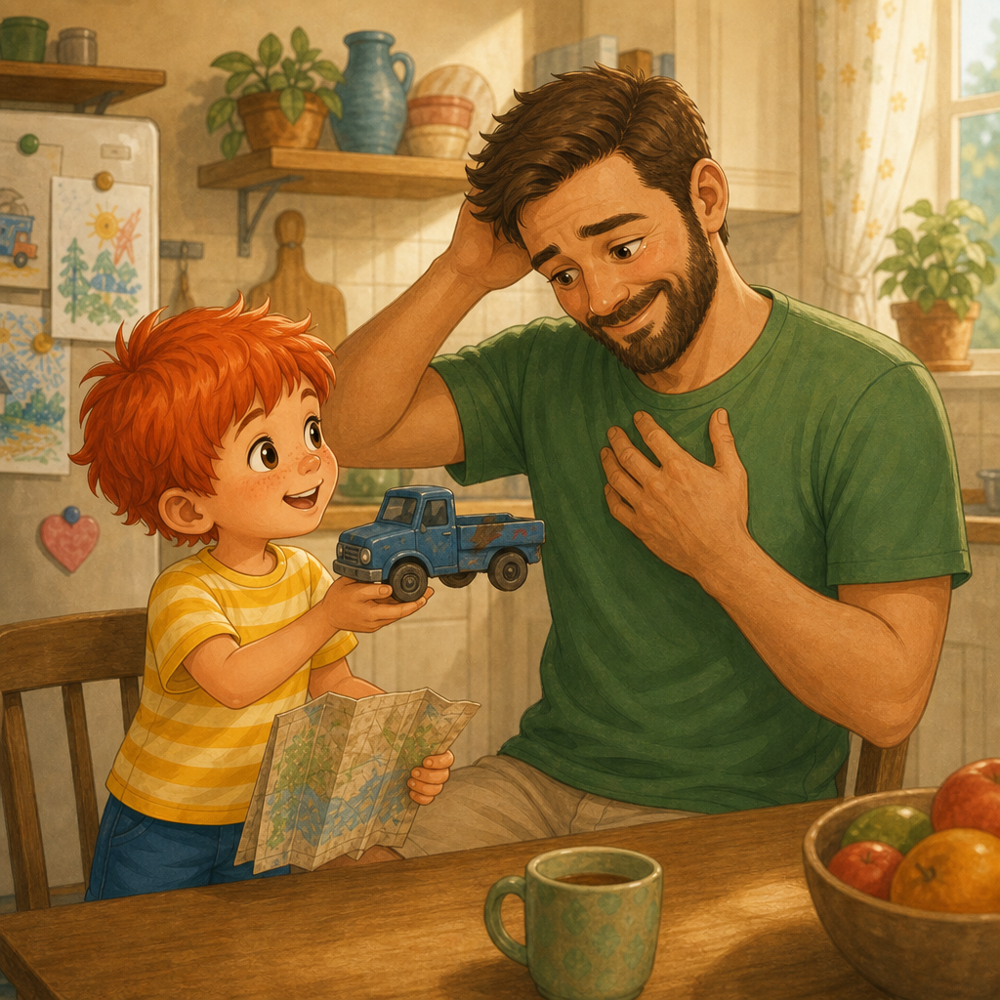
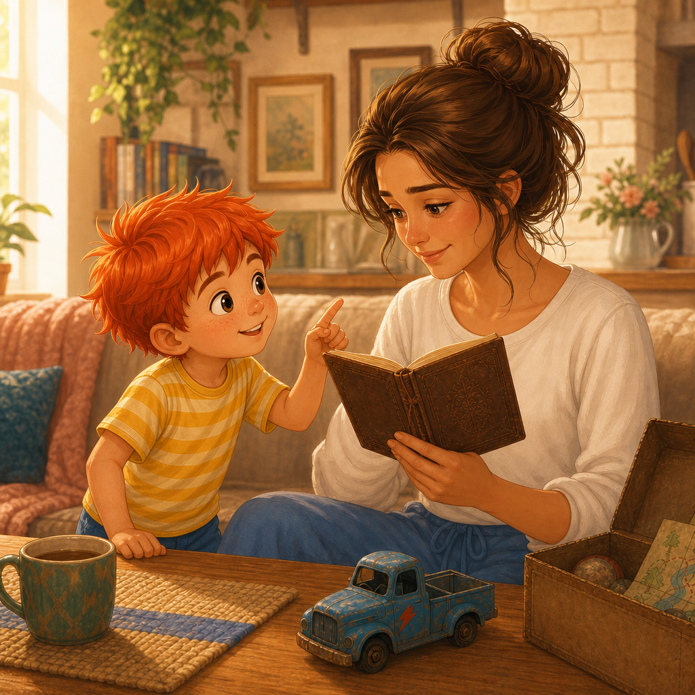
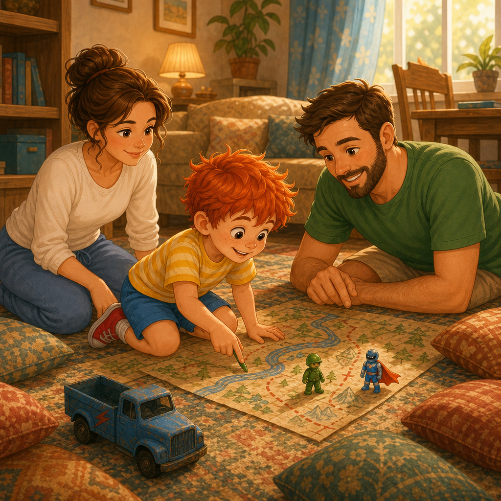
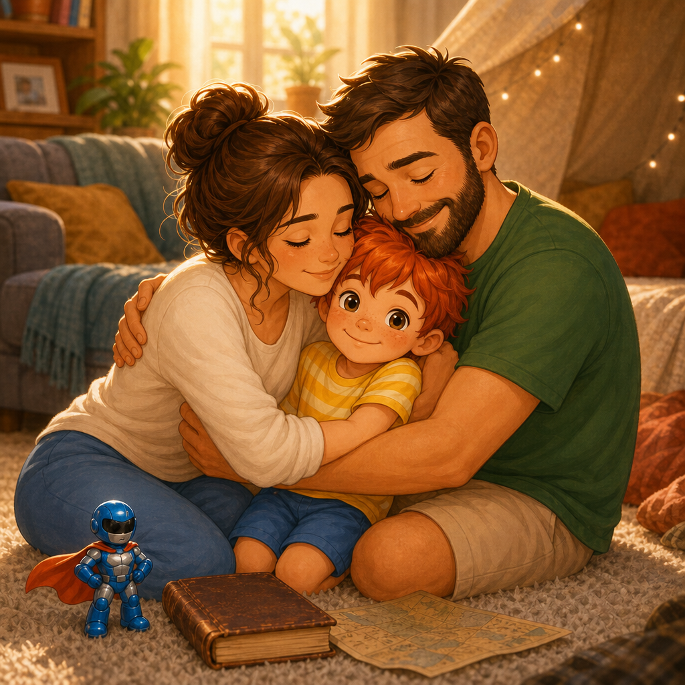
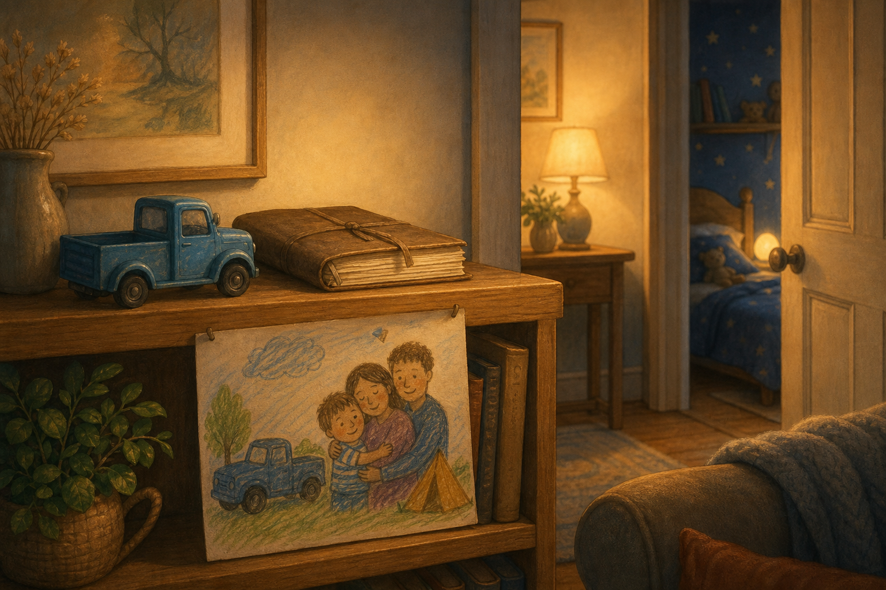

Приказки за Палавко
Палавко и Денят на детето

Здравей, аз съм Палавко. Днес ще ти разкажа как на Деня на детето мама и татко почти забравиха, че е празник. Как аз намерих Съкровищата на татко от времето, когато е бил точно на шест години като мен. И Дневника на мама, в който тя беше скрила една малка мечта. И как се оказа, че понякога децата трябва да припомнят на възрастните най-важните неща.
Всичко започна на първи юни.
Палавко се събуди толкова рано, че дори слънцето изглеждаше леко изненадано.
Той отвори очи.
После направо ги ококори.
После седна в леглото и каза:
- Днес е ДЕНЯТ.
На нощното шкафче Рико стоеше изправен, както винаги. Блицко беше паднал по гръб, но по начин, който можеше да мине за героична поза, ако човек много искаше да бъде любезен.
- Какъв ден? - попита Палавко вместо тях, защото играчките сутрин говореха само ако въображението вече си беше измило зъбите.
После сам си отговори:
- Денят на детето!
Той скочи от леглото.
Облече тениската си наопаки.
После я свали.
После я облече правилно.
После реши, че така е прекалено обикновено за празник. И си сложи чорапи с различни цветове. Единият беше син, другият жълт.
- Това не е грешка - каза той на Рико. - Това е акцент. Чух го от една приятелка на мама.
Рико, ако можеше да кимне одобрително, щеше да го направи.
Палавко взе Рико и Блицко и изтича към кухнята.
Но там нямаше балони.
Нямаше и торта във формата на ракета.
Нямаше нищо празнично.
Там стоеше мама с телефон на ухото, лаптоп на масата, чаша кафе и много сериозно изражение.
И татко беше там - с друг лаптоп, тефтер, химикал и лице на човек, който току-що е разбрал, че "ще свърша нещо набързо" понякога означава "цяла сутрин".

- Добро утро! - извика Палавко.
Мама вдигна пръст към него. Това означаваше: "Обичам те, но в момента говоря с човек, който не знае къде е бутонът за прикачен файл."
Татко отговори:
- Добро утро, шампионе.
Но го направи, без дори да вдигне очи.
Палавко застана насред кухнята.
Изчака.
После изчака още малко.
После изчака толкова много, че според него вече беше пораснал с един милиметър.
- Някой ще каже ли нещо? - попита той.
Татко погледна към него.
- Нещо.
Палавко го изгледа.
- Шегата щеше да е смешна, но не и на първи юни.
Мама затвори телефона.
- Извинявай, миличък. Днес ме гони важен срок.
- Аз също имам срок - каза татко.
- Моят срок е по-важен - каза Палавко.
Мама се усмихна уморено.
- Какъв е твоят срок?
- До края на Деня на детето трябва да има ден на детето.
В кухнята настъпи тишина.
От онези неудобни моменти, в които възрастните знаят, че детето е казало нещо вярно, но още се надяват да отиде с тази истина в другата стая и да си поиграе само.
Татко се почеса по брадата.
- Разбира се, че ще има. Само да мине това...
- "Само да мине това" - повтори Палавко. - Това е най-любимото ви изречение.
- Не е вярно - каза мама.
- Вярно е. Вчера беше "само да мине тази среща". Преди това беше "само да мине този имейл". Преди това беше "само да мине пералнята".
- Пералнята наистина мина - каза татко. - Даже центрофугира.
- Не помагаш - каза мама.
Палавко подпря брадичка на ръце.
- Денят на детето не може да чака имейл.
- Ще излезем следобед - каза мама. - Обещавам.
- Следобед кога?
- Скоро.
Палавко погледна татко.
- А ти?
- И аз скоро.
Палавко въздъхна.
- Вие двамата имате много странна дума за "никога".
Татко се опита да не се усмихне. Не успя напълно.
- Добре - каза Палавко. - Аз ще се празнувам сам.
- Миличък...
- Не се тревожи. Ще бъда дете-професионалист.
И излезе от кухнята с Рико в едната ръка и Блицко в другата.
В хола всичко изглеждаше обикновено.
Диванът беше диван.
Килимът беше килим.
Възглавниците бяха възглавници, макар че Палавко знаеше, че при правилно настроение могат да станат планини, кораби, острови и понякога много удобни кратери.
На Деня на детето обикновените неща не биваше да остават обикновени прекалено дълго.
Затова Палавко обяви експедиция за търсене на съкровища.

- Рико, ти си отговорник по реда. Блицко, ти си отговорник по неочакваните обрати.
Палавко провери под дивана.
Намери едно копче, две трохи и молив, който явно беше заминал на самостоятелна ваканция.
Провери зад пердето.
Намери прашинка, която приличаше на малък облак с лични проблеми.
После отвори шкафа в коридора.
Там имаше зимни шапки, чадъри, торби, една стара помпа за топка и много неща, които възрастните пазят "за всеки случай", но никой не знае какъв е случаят.
И точно на най-горния рафт, зад кутия с кабели, Палавко видя стара картонена кутия.
Не беше от онези кутии, които миришат на магазин.
Тази миришеше на прах, на време и на тайна.
На капака с избледнял син флумастер и почерк като на самия Палавко пишеше:
"Моити любими играчке"

Палавко замръзна.
- Рико - прошепна той, - намерихме нещо от предишен живот.
Той свали кутията внимателно. Не беше много тежка, но беше от онези неща, които ти се струват важни още преди да знаеш защо.
Занесе я на килима.
Постави Рико отляво и Блицко отдясно.
- Официално започваме мисия "Завръщане в миналото".
Капакът изскърца.
Отвътре се показа малко синьо камионче с едно липсващо колело и червена драскотина като светкавица.
Имаше дървено топче.
Имаше камъче, на което с молив беше написано "ЛУНА".
Имаше жълт хартиен медал, изрязан криво. На него пишеше:
"НАЙ-БРЪЗ ШАФЬОР НА КИЛИМ"
Най-отдолу имаше снимка.
На нея се виждаше момче с рошава червеникава коса като на Палавко, ожулено коляно и усмивка, която сякаш току-що е измислила нова беля. В ръката си държеше синьото камионче.
Палавко погледна снимката.
Това беше кутията за Съкровища на татко, когато е бил на 6.
После Палавко погледна към кухнята, където възрастният татко още водеше сериозна битка с документа.
После пак погледна снимката.
- Това е татко?
Беше трудно за вярване.
Момчето на снимката изглеждаше така, сякаш би скочило в локва, без да пита дали обувките са подходящи.
Възрастният татко казваше неща като: "Не стъпвай там, мокро е. Ще настинеш."
Палавко взе сгънат лист.
Беше карта.
Не карта на град.
Карта на детска стая.
На нея бяха нарисувани "Гара Камион", "Планината Възглавница", "Морето Под Масата" и "Опасният тунел зад фотьойла".
Палавко гледа картата дълго.
После прошепна:
- Значи татко е знаел.
Рико мълчеше.
Блицко мълчеше.
Палавко също замълча, защото понякога една стара карта може да каже повече от цяла среща.
Той върна Съкровищата внимателно, но не затвори кутията.
И тогава забеляза още нещо.
По-назад на рафта стоеше плоска кутия с цветна панделка.
На нея с красиви детски букви беше написано:
"Моето тайно дневниче"

Палавко знаеше, че личните неща не се отварят без разрешение.
Поколеба се, но беше силно изкушен и си каза:
- Това е историческо проучване.
После добави:
- И е Денят на детето.
Това не беше точно разрешение, но звучеше като нещо, което може да бъде обсъдено по-късно с лека усмивка.
Вътре имаше тетрадка с твърди корици, изсъхнало цвете между две страници, снимка на мама като момиче и малък розов ластик за коса.
Палавко отвори дневника.
На първата страница пишеше:
"Когато порасна, искам в дома ми на никой да не му липсва прегръдка."
Палавко прочете изречението два пъти.
То беше кратко.
Но някои кратки изречения са като малки ключове. Отключват големи врати.
На следващата страница пишеше:
"Ще стана изследователка на облаци."
По-нататък мама беше написала:
"Искам да рисувам. И да правя палачинки в сряда. И да не забравя как се играе на магазин с листа, защото истинските пари са листата."
Палавко седна още по-тихо.
В кухнята мама точно каза:
- Не, сряда е невъзможна. Сряда е напълно пълна.
Палавко погледна дневника.
После кухнята.
После пак дневника.
На друга страница беше нарисувана къща. Вътре - трима души, котка, огромна маса и прозорец с много цветя.
Под рисунката пишеше:
"Когато имам семейство, ще вечеряме заедно и никой няма да бърза."
Палавко затвори дневника внимателно.
Изведнъж му стана топло и тъжно едновременно.
Чувството да намериш стара играчка и да разбереш, че някой я е обичал преди теб като че пусна пеперудки в коремчето му.
Той седна между двете открития.
От едната страна бяха Съкровищата на татко: камионче, карта, медал и лунно камъче.
От другата беше Дневникът на мама: облаци, палачинки, листа и една къща, в която всички обичат прегръдките.
А в кухнята мама и татко все още бяха възрастни.
Много възрастни.
Прекалено възрастни, даже стари - на цели трийсет и нещо години.
Палавко взе синьото камионче.
После Дневника.
И тръгна към кухнята.
- Татко - каза той.
- Да, миличък, само секунда.
Палавко зачака.
Една секунда мина.
После още една.
После още много секунди, които очевидно бяха от разтегливия възрастен вид.
- Татко.
- Сега, сега.
- Ще ме заведеш ли на "Гара камион"?
Татко най-после го погледна.
- Сега не мога, Палавко. Имам работа.
Палавко допълни
- А ще ме преведеш ли през "Опасния тунел зад фотьойла"?
- Само пет минути... Какво?
Палавко вдигна синьото камионче.
- А ако камионът трябва да мине през Опасния тунел зад фотьойла, който е отбелязан ясно в картата от миналото?
Татко замръзна.
Не много.
Само толкова, че курсорът на екрана продължи да мига самотно.
- Какво каза?
- Опасния тунел зад фотьойла.
Татко бавно свали ръцете си от клавиатурата.
- Откъде знаеш това?
Палавко сложи камиончето на масата.
- Намерих Съкровищата ти.

Татко погледна камиончето.
Лицето му се промени.
От човек, който има работа, той стана човек, който усилено опитва да си спомни нещо. А после сякаш отново стана 6-годишно момче, което някога е карало син камион по килим и е вярвало, че фотьойлът може да бъде тунел.
На Палавко му се стори, че май за пръв път видя очите на татко насълзени.
- Това още ли е тук? - попита татко тихо.
Той взе камиончето.
Палецът му мина по червената светкавица.
- Аз я нарисувах - каза той. - С червен молив. За да стане по-бърз.
- Бил си най-бързият шофьор на килим - каза Палавко.
Татко се засмя.
После смехът му стана малко по-тих.
- Бях. Поне в хола.
Палавко донесе картата.
Татко я разгъна.
Мама, която тъкмо пишеше нещо много делово, също погледна.
- Това е нашият стар хол - каза татко.
- Не - каза Палавко. - Това е цяла държава.
Татко кимна.
- Да. Така е.
Палавко го погледна.
- Искаш ли да направим нова карта?
Татко погледна лаптопа.
После камиончето.
После Палавко.
- Само след като...
Палавко вдигна вежди.
Татко спря.
- Щях да кажа лошото изречение, нали?
- Много близо беше - каза Палавко.
Татко въздъхна.
- Добре. Пет минути.
Но мама каза:
- Аз наистина не мога сега. Имам разговор след десет минути.
Палавко се обърна към нея.
- Мамо, знаеш ли какъв облак има навън?
- Какъв?
Мама го погледна.
Палавко отвори първата страница на Дневника и прочете на глас: "Когато порасна, искам в къщата ми никой да не бърза за прегръдка."
Мама взе Дневника.

Погледна страницата.
Усмихна се.
После очите й станаха влажни.
- Бях забравила това.
- Как се забравя такова нещо? - попита Палавко. Само едно изречение е
Татко, който още държеше камиончето, каза:
- Някои кратки неща най-лесно се губят в дълги списъци.
Мама го погледна.
- Ти нали имаше документ за попълване?
- Документът може да изчака пет минути - каза татко.
- Аха - каза Палавко. - Забелязвам развитие в героя.
Мама прелисти Дневника.
Пръстите й спряха на страницата с облаците.
- Изследователка на облаци - прошепна тя.
- Това е много сериозна професия - каза Палавко.
- По-сериозна от някои срещи - каза татко.
Телефонът на мама звънна.
Той звънеше много упорито. Човекът отсреща явно не знаеше правилото, че когато не ти вдигнат на петото позвъняване, трябва да прекъснеш.
Мама погледна екрана.
Палавко също го направи.
И татко.
Телефонът светеше така, сякаш е най-важното нещо на света.
Но най-важното сега не беше устройството, а една обикновена кутия, надписана с правописни грешки.
И една стара тетрадка с надпис "Моето тайно дневниче".
Мама пое въздух.
После натисна червения бутон.
Палавко отвори очи широко.
- Ти току-що победи телефона.
- Само за малко - каза мама.
- И това се брои.
Татко затвори лаптопа.
Това беше толкова сериозен звук, че Рико сигурно би го записал в доклад.
- Добре - каза татко. - Имаме пет минути.
Мама го погледна.
- Пет?
Татко погледна Палавко.
- Добре де. Десет.
Палавко скръсти ръце.
Татко въздъхна.
- Половин час.
Палавко се усмихна.
- Виждаш ли? Петте минути на възрастните наистина могат да се превърнат в половин час. Ти сам го каза.
- Използваш думите ми срещу мен - каза татко.
- Семейна традиция - каза Палавко.
И така започна урокът, който Палавко имаше да предаде на родителите си.

Първо разчистиха част от хола.
Татко донесе възглавници.
Мама донесе одеяло.
Палавко донесе Рико, Блицко, синьото камионче, медала, лунното камъче и Дневника, защото според него всеки важен урок трябва да се записва.
- Какво строим? - попита татко.
- Не строим - каза Палавко. - Откриваме.
- Каква е разликата?
- Ако строиш, мислиш къде да сложиш нещата. Ако откриваш, нещата сами ти казват какво са.
Татко погледна възглавницата.
- Тази ми казва, че е планина.
- Най-после - каза Палавко.
Мама сложи одеялото между два стола.
- Това палатка ли е?
Палавко се замисли.
- Зависи. Ако вътре има възрастен, който проверява телефона си, е склад. Ако вътре е родител, който разказва тайна, е палатка.
Мама остави телефона на масата.
- Палатка тогава.
Започнаха да рисуват нова карта.
"Планината Възглавница" стана по-голяма от преди.
"Морето Под Масата" получи вълни.
"Опасният тунел зад фотьойла" беше преместен зад дивана, защото фотьойлът вече не живееше при тях.
Мама нарисува "Облачното пристанище".
Татко нарисува "Гара Син Камион".
Палавко нарисува "Мястото, където никой не казва след пет минути".
Мама спря молива си.
- Това място много ми харесва.
- Да - каза Палавко. - Там телефоните говорят шепнешком и се срамуват.
Татко добави малък знак:
"Забранено за важни имейли."
- Татко - каза Палавко, - това е най-добрата ти работа днес.
- Ще го сложа в автобиографията си.
- Какво е автобиография?
- Списък с неща, където възрастните малко послъгват, за да изглеждат по-сериозни, отколкото са.
Мама се засмя.
- Най-после казваш истината.
После започна играта.
Синьото камионче тръгна от Гара Син Камион. Караше го татко, но Палавко беше главен навигатор, защото татко някога е бил шестгодишен експерт, но лицензът му беше изтекъл.
Рико пазеше моста.
Блицко летеше над Планината Възглавница и обявяваше опасности, които сам измисляше.
Мама седеше в палатката и водеше дневник на експедицията.
- Какво пишеш? - попита Палавко.
Мама прочете:
"Днес открихме, че килимът още може да бъде път. И че времето е най-ценната инвестиция"
- Какво е инвестиция? - попита Палавко
- Ще научиш и това някой ден - отговори мама
Палавко замълча.
Татко също.
После татко подкара камиончето твърде бързо и то се блъсна във възглавница.
- Катастрофа! - извика Палавко.
- Не е катастрофа - каза татко. - Това е контролирано кацане.
- Ти си шофьор, не самолет.
- Камионът има широки мечти.
Мама записа:
"Камионът има широки мечти."
После телефонът на татко иззвъня.
Всички погледнаха към него.
Татко протегна ръка.
Палавко не каза нищо.
Само взе хартиения медал и го сложи пред татко.
"НАЙ-БРЪЗ ШАФЬОР НА КИЛИМ"
Татко спря.
Погледна медала.
Погледна телефона.
После обърна телефона с екрана надолу.
- Шофьорът е в движение, говоренето по телефона е забранено - каза той.
Играха много повече от половин час.
Дори няколко половин часа.
Първо никой не забеляза.
После всички забелязаха и никой не каза нищо.
Накрая всички знаеха и продължаваха да играят.
Това беше най-сладкото закъснение.
По едно време татко лежеше по корем на килима и караше камиончето през тунела.
Мама беше в палатката и рисуваше облак, който приличаше на прегръдка.
Палавко седеше между тях и усещаше нещо странно.
Не беше като да получиш подарък.
Не беше като да ядеш сладолед.
Не беше като да спечелиш състезание.
- Мамо - каза той.
- Да?
- Ти още ли искаш да изследваш облаци?
Мама погледна рисунката си.
- Още, да.
- Татко, ти още ли искаш да си най-бързият шофьор?
Татко вдигна синьото камионче.
- Винаги съм искал.
Мама остави молива.
- Знаеш ли, Палавко, понякога възрастните много се объркват. Започват да мислят, че най-важното е срокът, задачата, работата, следващото нещо.
- И кафето - добави татко.
- И кафето - съгласи се мама. - Но ако постоянно бързаш към следващото нещо, може да пропуснеш човека, който стои до теб.
Палавко се замисли.
- Аз ли съм човекът?
Мама го прегърна.
- Ти си нашият човек.
Татко се приближи и ги прегърна и двамата. Стояха така дълго. Прегърнати. Заедно.

- Това означава ли, че днес няма да работите повече? - попита в един момент Палавко с надежда.
Мама и татко се спогледаха.
Това беше опасно споглеждане.
В него имаше календари, срокове и числа.
Но после мама каза:
- Ще работим малко по-късно. Когато ти заспиш.
- Това звучи нечестно към съня ви - каза Палавко.
- Понякога възрастните сами си причиняват странни неща - каза татко.
- Знам - каза Палавко. - Виждал съм ви да сгъвате чаршаф с ластик.
Мама се засмя толкова силно, че облакът на листа почти получи нова форма.
Следобед излязоха навън.
Не защото всичко беше свършено.
А защото всичко най-важно беше започнало.
В парка купиха сладолед.
Татко каза, че няма да се люлее, защото е възрастен човек.
Палавко му подаде медала.
- Ти си най-бързият шофьор на килим. Имаш репутация.
Татко се качи на люлката.
Първо внимателно.
После малко по-смело.
После каза:
- Само да не ме снимате.
Мама го снима.
- За семейния архив - каза тя.
- Това е предателство.
- Това е история.
Вечерта седнаха заедно на масата.
Не бързаха.
Мама направи палачинки, въпреки че не беше сряда.
- В Дневника пишеше сряда - каза Палавко.
- Понякога мечтите идват и в понеделник - каза мама.
Татко сложи синьото камионче на рафта в хола.
Не обратно в кутията.
А на видно място.
До него мама сложи Дневника.
- За да не забравим - каза тя.
- Може ли и аз да сложа нещо? - попита Палавко.
- Разбира се.
Той донесе една рисунка от деня: камион, облак, палатка и трима души, които са се прегърнали и нищо друго няма значение.
Мама залепи рисунката на стената.
Татко я гледа дълго.
- Това е хубав подарък за Деня на детето - каза той.
- Но аз не съм ви купил нищо - каза Палавко.
- Ти ни върна нещо - каза мама.
- Какво?
Мама го погали по косата.
- Най-същественото!
Преди сън мама го зави.
Татко седна на края на леглото.
Рико и Блицко мълчаха на нощното шкафче.
- Утре пак ли ще бъдете деца, поне за малко? - попита Палавко.
Мама се усмихна.
- Ще се опитаме.
- Не прекалено много - каза татко. - Все пак някой трябва да плаща тока.
- Добре - каза Палавко. - Може да сте възрастни за тока и деца за облаците.
- Това ми звучи справедливо - каза мама.
- И за камионите - добави татко.
- И за палачинките - каза Палавко.
- Особено за палачинките - каза мама.
Палавко затвори очи.
В стаята беше тихо.
От хола се проблясваше лека светлина. На рафта синьото камионче пазеше Дневника, а Дневникът пазеше камиончето. Двете стари съкровища вече не бяха скрити.

И някъде вътре в мама и татко две малки деца, които дълго бяха чакали, най-после седнаха на килима и започнаха да играят.
- Това беше най-прекрасният Ден на детето - прошепна Палавко и заспа спокойно.
ПОУКА
Понякога ставаме толкова сериозни, че губим себе си. Забравяме, че семейството е на първо място. А най-важното, което можем да си дадем един на друг, е време и любов.